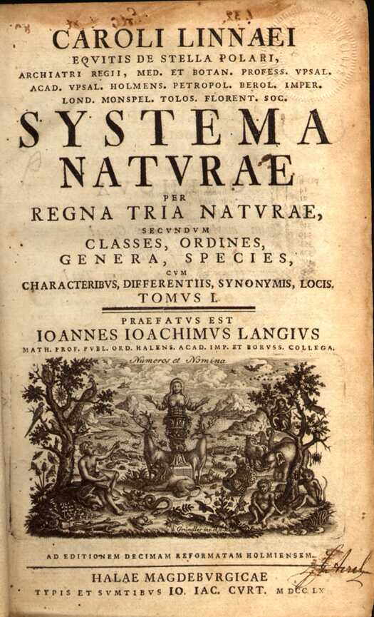

Ботаника — наука о растениях
Как целостная система знаний о растениях ботаника оформилась к XVII—XVIII векам, хотя многие сведения о растениях были известны и первобытному человеку, так как жизнь его была связана с полезными, главным образом пищевыми, лекарственными и ядовитыми растениями.
Первыми книгами, в которых растения описывались не только в связи с их полезностью, были произведения греческих и других учёных-натуралистов. Занимаясь растениями как частью природы, философы античного мира пытались определить их сущность и систематизировать их.
До Аристотеля исследователи интересовались преимущественно лекарственными и хозяйственно-ценными свойствами растений. Аристотель (384—322 до н. э.) в пятой книге «Истории животных» (лат. Historia Animalium) упомянул о своём «Учении о растениях», которое сохранилось только в небольшом числе фрагментов. Эти фрагменты были собраны и изданы в 1838 году немецким ботаником Ф. Виммером. Из них можно видеть, что Аристотель признавал существование двух царств в окружающем мире: неодушевленную и живую природу. Растения он относил к одушевлённой, живой природе. По Аристотелю, растения обладают низшей ступенью развития души по сравнению с животными и человеком. Аристотель отмечал в природе растений и животных некоторые общие свойства. Он писал, например, что в отношении некоторых обитателей моря трудно решить, растения это или животные
Ученика Аристотеля Теофраста (371—286 до н. э.) называют «отцом ботаники». Ботанические труды Теофраста можно рассматривать как свод в единую систему познаний практиков сельского хозяйства, медицины и работ учёных античного мира в этой области. Теофраст был основателем ботаники как самостоятельной науки: наряду с описанием применения растений в хозяйстве и медицине он рассматривал теоретические вопросы. Влияние трудов Теофраста на последующее развитие ботаники в течение многих столетий было огромным, так как учёные Древнего мира не поднимались выше него ни в понимании природы растений, ни в описаниях их форм. В соответствии с современным ему уровнем знаний отдельные положения Теофраста были наивны и не научны. Учёные того времени ещё не имели высокой техники исследования, не было и научных экспериментов. Но при всём этом уровень знаний, достигнутый «отцом ботаники», был весьма значительным.
Римский натуралист Плиний Старший в своей «Естественной истории» привёл все известные его современникам сведения о природе; он упомянул около 1000 видов растений, описав их достаточно точно.
После общего упадка естествознания в Средние века ботаника начинает вновь интенсивно развиваться в Европе с XVI века. Первоначально это коснулось лишь систематики и морфологии, но в XVII—XVIII веках возникают и формируются другие разделы ботаники, в частности, анатомия растений.
Большим прорывом европейской науки в изучении растений стал объёмный, хорошо иллюстрированный, труд Франсиско Эрнандеса «История растений Новой Испании» (1570—1577), выполненный по заказу Филиппа II. В книгу вошли описания более 3000 растений и 500 животных, существовавших на территории современной Мексики. В то же самое время, но несколько более краткую работу о растениях в своём фундаментальном произведении «Общая история дел Новой Испании» (1576) написал Бернардино де Саагун. Обе книги опирались на сведения ацтеков об окружающем их мире, а потому могут считаться такими, которые мало подверглись европейскому влиянию (хотя классификация растений базировалась на работах Плиния). В дальнейшем рукопись Саагуна была забыта, но книга Эрнандеса была неоднократно заимствована другими учёными: Хосе де Акоста, Нардо Антонио Рекки, Фабио Колонна, Хайме Онорато Помар, Грегорио Лопес, Федерико Чези, Хуан Барриос, Иоган де Лаэт, Иоан Эусебио Ньеремберг, Вильям Пизо, Роберт Лавэл, Джон Рэй, Джеймс Ньютон и другие.
В России в XV—XVII веках переводят с греческого, латинского и европейских языков и переписывают описания лекарственных растений.
Карл Линне́й (швед. Carl Linnaeus, Carl Linné) — известный шведский естествоиспытатель и врач, создатель единой системы классификации растительного и животного мира, обобщившей и в значительной степени упорядочившей биологические знания всего предыдущего периода, что ещё при жизни принесло ему всемирную известность. В 1729 году Линней познакомился с Улофом Цельсием (1670—1756), профессором теологии, который был увлечённым ботаником. Вскоре он поселился в доме Цельсия и получил доступ к его обширной библиотеке. В этом же году Линней написал небольшую работу «Введение в половую жизнь растений» (лат. Praeludia sponsaliorum plantarum), в которой были изложены основные идеи его будущей классификации растений, основанной на половых признаках. Эта работа вызвала большой интерес в академических кругах Уппсалы. С 1730 года Линней под началом профессора Улофа Рудбека-младшего приступил к преподаванию как демонстратор в ботаническом саду университета. Лекции Линнея пользовались большим успехом. В XVIII веке, положив в основу своей искусственной системы строение цветка, Линней разбил мир растений на 24 класса. Система Линнея ненадолго пережила своего создателя, однако значение её в истории ботаники огромно. Одной из главных заслуг Линнея стало определение понятия биологического вида, внедрение в активное употребление биноминальной (бинарной) номенклатуры и установление чёткого соподчинения между систематическими (таксономическими) категориями.
Генрих Иоганн Непомук фон Кранц (нем. Heinrich Johann Nepomuk Edler von Crantz — австрийский врач и ботаник, профессор Венского университета (стал доктором медицины в 1750 году). В 1769 году опубликовал Classis Cruciformium emendeta.
XIX век ознаменовался интенсивным развитием естествознания в целом. Бурное развитие получили и все отрасли ботаники. Решающее влияние на систематику оказала эволюционная теория Ч. Дарвина.
Характерные черты современного этапа развития ботаники — стирание граней между отдельными её отраслями и их интеграция. Так, в систематике растений для характеристики отдельных таксонов всё шире применяют цитологические, анатомические, эмбриологические и биохимические методы. Разработка новых методов исследования, основанных на достижениях физики и химии, позволила решать задачи, недоступные ранее. Так, в результате использования электронного микроскопа, разрешающая сила которого по сравнению с другими оптическими приборами возросла в сотни раз, были выявлены многие новые детали строения растительной клетки, что с успехом используется не только в анатомии, но и в систематике растений.